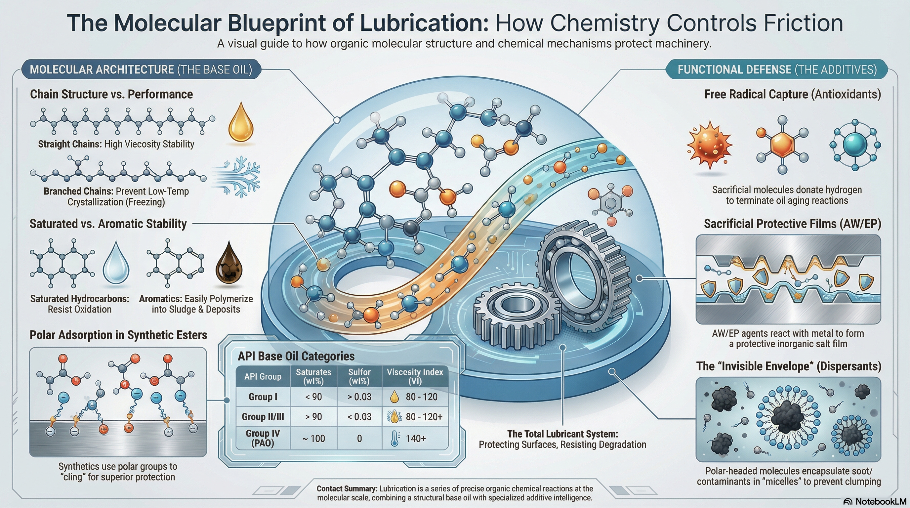

緒論：潤滑現象的有機化學本質
潤滑油在工業文明中扮演著不可或缺的角色，其核心功能在於減少機械摩擦、降低磨損、散發熱量並防止腐蝕。然而，從基礎科學的角度視之，潤滑並非僅僅是物理性的「隔開」兩個表面，而是一場發生在分子尺度上的精密有機化學反應與物理化學交互作用。潤滑油系統的性能本質上取決於其基礎油分子的碳氫骨架結構，以及添加劑中極性官能團與金屬表面之間的化學親和力。
潤滑油通常由佔體積 70% 至 99% 的基礎油與 1% 至 30% 的功能性添加劑組成。礦物型基礎油主要由石油精煉而成，本質上是高分子量的碳氫化合物混合物，其分子鏈長度通常分佈在 C20 到 C40 之間。這些分子的排列方式、支鏈化程度以及是否存在不飽和鍵，直接決定了油品的粘度、流動性與熱穩定性。透過有機化學的視角，我們可以深入探討分子間作用力（如范德華力）如何轉化為宏觀的粘度特性，以及化學合成如何精準裁縫出具備極端性能的合成潤滑油。
第一章 基礎油的分子架構與分類化學
基礎油是潤滑油的靈魂，其化學組成決定了產品的基本物理邊界。根據美國石油學會（API）的定義，基礎油被分為五大類，這項分類標準實際上是對烴類分子「純度」與「結構規整性」的化學界定。
1.1 飽和烴與芳香烴的平衡
礦物油（第一、二、三類）主要由烷烴（Alkanes）、環烷烴（Cycloalkanes/Naphthenes）及少量的芳香烴（Aromatics）組成。從化學穩定性來看，飽和的烷烴與環烷烴由於其碳-碳單鍵（σ 鍵）具有極高的鍵能，且不具備容易受到親電攻擊的 π 電子系統，因此具有較佳的抗氧化能力。
相比之下，芳香烴含有苯環結構，其共軛 π 體系雖然賦予了分子一定的化學溶解力與天然抗氧化特性，但在高溫下極易發生聚合反應，生成油泥與沉積物。現代精煉工藝如加氫處理（Hydrotreating），其化學本質是利用氫氣在催化劑作用下斷開芳香環的不飽和鍵，將其轉化為飽和的環烷烴或鏈烷烴，從而提昇油品的熱化學穩定性。
1.2 碳鏈結構與粘度指數的分子力學
粘度是潤滑油最重要的物理指標，其受溫度影響的變化程度稱為粘度指數（Viscosity Index, VI）。從有機分子動力學的角度分析，高 VI 意味著分子的粘度隨溫度升高而下降的速度較慢。
直鏈烷烴（n-Paraffins）具有極高的 VI，因為它們像平直的細繩，在高溫下分子的熱運動雖然劇烈，但分子間的範德華力（Van der Waals Force）仍能透過較大的有效接觸面積維持一定的流動阻力。然而，這類分子的缺點在於低溫下極易像磚塊一樣規整堆疊，發生結晶現象，導致油品失去流動性（高傾點）。
為了平衡低溫流動性與粘溫特性，化學家開發了加氫異構化（Hydroisomerization）技術，將直鏈烷烴轉化為帶有適度支鏈的異構烷烴（iso-Paraffins）。這些支鏈如同在直線上長出的突起，產生了空間位阻（Steric Hindrance），破壞了分子的結晶趨勢，使油品在低溫下仍能保持液態，同時維持較高的飽和度。
表 1：API 基礎油分類與化學特徵對照表
| 類別 | 飽和烴含量 (wt%) | 硫含量 (wt%) | 粘度指數 (VI) | 分子結構主要特徵 | 典型生產工藝 |
|---|---|---|---|---|---|
| 第一類 (I) | < 90 | > 0.03 | 80 - 120 | 含有較多芳香烴與雜原子(S, N, O) | 溶劑萃取、物理分離 |
| 第二類 (II) | > 90 | < 0.03 | 80 - 120 | 幾乎全飽和，分子結構較規整 | 加氫裂解、加氫精製 |
| 第三類 (III) | > 90 | < 0.03 | > 120 | 高度異構化，支鏈分佈均勻 | 加氫異構化、蠟異構化 |
| 第四類 (IV) | ~ 100 | 0 | 140+ | 聚 α-烯烴 (PAO)，分子結構單一 | 化學寡聚合成 |
| 第五類 (V) | N/A | N/A | 多樣化 | 包含酯類、聚醚等，具備極性官能團 | 酯化反應、開環聚合 |
第二章 分子間作用力：潤滑油的微觀「黏性」
要理解潤滑油為什麼「粘」，必須回到有機化學中關於分子間吸引力的討論。潤滑油分子之間不具備共價鍵或離子鍵，它們主要依靠範德華力相互維繫。
2.1 倫敦色散力與感應偶極
對於非極性的烷烴分子而言，主要的吸引力來源是倫敦色散力（London Dispersion Forces）。這是一種瞬時現象：分子內部的電子雲會發生隨機波動，導致在某一瞬間，分子的一端帶微弱正電荷，另一端帶微弱負電荷，進而感應鄰近分子也產生對應的偶極。
這種力量的大小與分子的「可極化性」有關。分子量越大、電子的數量越多、碳鏈越長，電子雲發生波動的機率與強度就越高，分子間就越「粘」。這解釋了為什麼 C30 的油比 C20 的油粘度更高，因為長鏈分子之間的「勾連」點更多。
2.2 支鏈對分子間作用力的影響
支鏈結構會顯著影響這種微觀吸引力。帶有長支鏈的分子與帶有短而密集支鏈的分子在物理性質上有顯著差異。研究顯示，分支集中在分子中心附近的潤滑油，通常具有極高的粘度指數和較低的傾點。
從簡單的幾何比喻來看，長而直的分子像是一束掛在一起的掛麵，容易產生大面積的接觸；而高度支鏈化的分子像是一堆糾結的亂草球，雖然不容易「結晶」變成固體，但分子間的有效接觸面積減少，導致其在高溫下維持粘度的能力（即 VI）通常低於直鏈分子。因此，合成基礎油（如 PAO）的優勢在於能精確控制支鏈的位置與長度，在「不結晶」與「高粘度指數」之間取得最佳化學平衡。
第三章 合成潤滑油之分子工程：PAO 與酯類
合成潤滑油代表了有機合成化學在工業領域的巔峰應用。與從石油中「篩選」分子不同，合成油是「構建」出來的。
3.1 聚 α-烯烴 (PAO) 的受控寡聚
PAO 是典型的第四類基礎油，其生產過程是一系列精密的化學反應。首先透過乙烯的催化寡聚生成線性 α-烯烴（如 1-癸烯，1-Decene）。接著，利用路易斯酸催化劑（如 BF3 或 AlCl3），使這些烯烴單體發生受控的聚合反應，生成二聚體、三聚體或四聚體。
這類反應的化學特徵在於分子的純淨度。PAO 分子幾乎完全相同，不含任何硫、磷或芳香環雜質。由於其碳鏈結構是根據預設設計的，它克服了礦物油中分子量分佈過寬的缺點。較窄的分子量分佈意味著油品具有更低的揮發性（Noack 揮發度），因為不存在容易蒸發的小分子；同時也具備更佳的低溫性能，因為不存在容易凝固的大分子。
3.2 酯類潤滑油的極性化學
酯類（Group V）是由有機酸與醇透過酯化反應（Esterification）生成的，其反應方程式一般為：
R-COOH + R'-OH → R-COO-R' + H2O
這種結構的核心在於酯基官能團（-COO-）。與純碳氫化合物不同，酯基具有明顯的極性。
從有機化學原理來看，氧原子的電負度高於碳原子，導致 C=O 鍵產生永久偶極。這使得酯類分子具備了「極性吸附」的能力：分子的正電端會被金屬表面的負電荷所吸引，形成一層定向排列的分子膜。這種化學親和力使得酯類在基礎油膜破裂的極端工況下，仍能提供一層殘餘的保護層，這被稱為優異的「潤濕性」。
此外，酯類分子的高鍵能（C=O 鍵約 745 kJ/mol）使其在高溫下不易斷裂，且其極性使得它對極性添加劑（如抗磨劑）具有極佳的溶解度，並能有效溶解引擎運作中產生的極性氧化副產物（油泥），展現出「自清潔」的功能。
第四章 潤滑油降解的化學路徑：氧化與聚合
潤滑油在服務過程中會逐漸「變質」，這本質上是一系列不受控制的有機化學反應過程，主要包括氧化（Oxidation）和隨後的熱聚合。
4.1 自由基鏈反應機制
氧化是潤滑油失效的最主要原因。當油品暴露在高溫、空氣和磨損產生的金屬顆粒（如銅、鐵，作為催化劑）中時，烴類分子（RH）會發生化學斷裂，生成高活性的自由基。
氧化過程遵循典型的自由基鏈反應路徑：
- 引發階段： RH → R• + H• (生成烷基自由基)
- 增殖階段：
- R• + O2 → ROO• (生成過氧自由基)
- ROO• + RH → ROOH + R• (生成氫過氧化物並再生自由基)
- 終止階段：自由基相互結合形成穩定分子。
4.2 從酸到油泥的演變
在增殖階段生成的氫過氧化物（ROOH）極不穩定，會進一步分解成醇、醛、酮，並最終氧化為羧酸。酸性產物的出現會導致金屬表面的腐蝕，特別是對於銅鉛合金軸承。
更嚴重的是，這些氧化中間產物會發生進一步的縮合反應或聚合反應，形成分子量巨大的極性物質。這些大分子在油中的溶解度極低，會逐漸析出形成黑色的、粘稠的油泥（Sludge），或是受熱後在金屬表面乾燥形成堅硬的漆膜（Varnish）。這不僅會導致油品粘度異常增加，還會堵塞油路和濾清器，導致機械失效。
第五章 添加劑化學：賦予油品「智慧」屬性
添加劑是有機化學在潤滑技術中的精華所在。它們透過特定的官能團設計，在基礎油中發揮「增強」、「抑制」或「賦予」新功能的任務。
5.1 抗氧化劑：自由基捕獲者
為了切斷上述的氧化連鎖反應，潤滑油中加入了「犧牲型」添加劑——抗氧化劑。常見的類型包括受阻酚（Hindered Phenols）和芳香胺（Aromatic Amines）。
其化學原理是：這些分子結構中含有容易脫落的氫原子（如 O-H 或 N-H 鍵）。當氧化反應產生的過氧自由基（ROO•）出現時，抗氧化劑會優先與其反應，將氫原子捐獻出去，使其變成穩定的氫過氧化物。抗氧化劑自身則轉化為一個能量極低、不具活性的自由基，從而強行終止氧化連鎖反應。
5.2 粘度指數改質劑：熱動力學的「彈簧」
粘度指數改質劑（VII）是分子量極高的聚合物（如聚異丁烯、烯烴共聚物）。它們在油中的行為可以用物理模型來完美解釋。
在低溫下，聚合物長鏈由於與溶劑（基礎油）的親和力較低，會發生收縮，捲曲成緊密的小球，此時對油品流動的阻礙很小。隨著溫度升高，聚合物鏈受熱運動影響開始伸展開來，並與油分子發生更強的交互作用。展開後的巨大分子結構增加了流體內部的摩擦力，有效地抵消了基礎油因加熱而變稀的趨勢。這種「受熱膨脹、遇冷收縮」的分子行為，使得單級油轉變為多級油（如 5W-30），能在嚴酷的溫差下工作。
5.3 表面保護化學：抗磨劑與極壓劑
在邊界潤滑條件下，機械表面會發生微觀接觸，此時需要化學性的防禦機制。
- 抗磨劑 (AW)：最著名的代表是 ZDDP（二烷基二硫代磷酸鋅）。ZDDP 是一種極性分子，能吸附在金屬表面。當摩擦產生局部高溫時，ZDDP 發生熱分解反應，與金屬原子反應生成一層由聚磷酸鹽組成的玻璃狀保護薄膜。這層薄膜具備一定的塑性，能吸收衝擊負荷並減少金屬間的直接剪切。
- 極壓劑 (EP)：在更高負荷下（如齒輪傳動），需要活性更高的化學反應。極壓劑含有硫（S）或氯（Cl）等活性元素。在極端壓力產生的瞬時高溫下，化學鍵斷裂釋放出活性原子，與鐵原子直接反應生成無機鹽膜（如硫化鐵）。這種膜的剪切強度低於金屬本身，因此在摩擦發生時，是薄膜在發生滑動而非金屬發生焊接或擦傷，這被稱為「犧牲性潤滑」。
表 2：常見潤滑油添加劑之化學原理與功能對照表
| 添加劑類型 | 典型化學成分 | 作用機制 (化學/物理) | 核心功能 |
|---|---|---|---|
| 抗氧化劑 | 受阻酚、芳香胺 | 捐獻氫原子，終止自由基鏈反應 | 延緩油品老化、防止酸值上升 |
| 粘度指數改質劑 | 聚甲基丙烯酸酯 (PMA) | 高分子聚合物受熱展開，增加內摩擦 | 改善粘溫特性，實現多級化 |
| 清淨劑 | 磺酸鈣、水楊酸鎂 | 鹼性核心中和酸，極性頭部清潔表面 | 中和燃燒酸，防止高溫沉積物 |
| 分散劑 | 聚異丁烯琥珀酰亞胺 | 兩親性分子封裝微粒，形成微胞懸浮 | 防止菸灰凝聚，預防低溫油泥 |
| 抗磨劑 (AW) | ZDDP, 磷酸酯 | 受熱分解生成聚磷酸鹽玻璃膜 | 減少中低負荷下的磨損 |
| 極壓劑 (EP) | 硫化烯烴、氯化石蠟 | 瞬時反應生成低剪切強度金屬鹽膜 | 防止高負荷下的金屬焊接與擦傷 |
| 傾點降低劑 | 烷基化萘、聚甲基丙烯酸酯 | 物理吸附在蠟晶表面，抑制晶體生長 | 提昇低溫啟動性能 |
第六章 清潔與懸浮化學：洗滌劑與分散劑
引擎內部的清潔主要依靠洗滌劑與分散劑的協同工作。這兩者常被統稱為「清潔添加劑」，但其化學作用機制卻截然不同。
6.1 洗滌劑的「中和與剝離」
洗滌劑（Detergents）通常是金屬有機鹽類（如鈣、鎂鹽），具有明顯的極性頭部與疏水的碳氫尾部。
其第一項化學職能是「中和反應」。許多洗滌劑被製備成「超鹼性」（Overbased），其內部的膠體結構中含有超量的碳酸鈣。當燃料燃燒產生的強酸（如硫酸）侵入油箱時，洗滌劑會與其發生酸鹼中和，保護精密零件不受酸蝕。其第二項職能是「表面清洗」，極性頭部會強效吸附在活塞環等高溫金屬表面的積碳前驅體上，將其「洗」入油中。
6.2 分散劑的「微胞封裝」
分散劑（Dispersants）是無灰型的有機高分子（不含金屬原子）。其化學結構通常包含一個極性的含氮頭部（如琥珀酰亞胺）和一條極長的油溶性尾巴。
分散劑的主要任務是處理「菸灰」（Soot）和氧化產生的微小汙染物。當這些微粒出現時，分散劑的極性頭部會迅速粘附在微粒表面，長長的尾巴則伸向油中，就像為汙染物穿上了一件「隱身衣」。這種構造形成了穩定的膠體微胞，防止微粒之間因為相互吸引而聚集成大的塊狀物。這種「懸浮」功能保證了汙染物能隨著油流進入過濾器，而不會沉澱在油底殼或堵塞細微的潤滑孔道。
第七章 潤滑化學中的比喻與生活化說明
有機化學的分子世界對非專業人士來說往往過於抽象，透過具象化的類比可以更清晰地理解其運作邏輯。
7.1 分子長度與粘度：義大利麵與碎米粒
想像一盆煮熟的義大利麵（長鏈高粘度油分子）與一盆米粒（短鏈低粘度溶劑分子）。當你用筷子攪拌時，義大利麵因為條與條之間的糾纏（分子間作用力），產生的阻力遠大於米粒。潤滑油的粘度本質上就是這種「分子糾纏」與「吸引力」的宏觀表現。
7.2 支鏈與防凍：紅磚與亂石堆
直鏈烷烴分子就像規則的紅磚，只要溫度稍低，它們就會整齊地碼放起來（結晶），變成硬梆梆的固體。而帶有支鏈的異構烷烴分子就像形狀不規則的亂石。不管你怎麼堆放，亂石之間總是有縫隙，難以形成整齊的固體堆疊。這就是為什麼支鏈化程度高的合成油即使在零下四十度仍能流動的原因。
7.3 清潔機制：信封與包裹
分散劑的工作就像是給危險品套上信封。每一個菸灰微粒都被分散劑分子包裹得嚴嚴實實，使它無法與其他微粒接觸發生連鎖反應（凝聚）。這種「封裝」化學讓引擎內部數以億計的微小汙染物能安全地懸浮在油中，直到下一次換油。
第八章 現代分析化學在潤滑油中的應用
隨著分析技術的進步，研究者現在能以前所未有的精度觀察潤滑油的化學行為。
8.1 超高場核磁共振 (NMR)
利用高達 28.2 T 的超高場 NMR 技術，科學家可以解析複雜烷烴分子中的特定支鏈位置。這對於開發高性能合成潤滑油至關重要。透過精準定位甲基、乙基支鏈在碳主鏈上的分佈，可以量化分子結構與低溫流動性（傾點）之間的數學關係。
8.2 分子動力學 (MD) 模擬
在計算化學領域，MD 模擬被用來研究分子在狹窄間隙中的吸附行為。例如，研究發現長鏈烷烴在金屬接觸界面的排列會顯著影響摩擦係數。某些特定的異構結構（如中位支鏈）在降低摩擦力方面表現優於末端支鏈結構。這類三階洞察（即結構細微差異對界面行為的影響）正在指導未來節能型（低摩擦）潤滑油的研發。
第九章 結論與未來展望
潤滑油不僅僅是石油工業的副產品，它是一門融合了合成有機化學、物理化學與介面科學的跨領域藝術。從基礎油的碳氫骨架優化，到添加劑中功能性官能團的精密配置，潤滑技術的每一次飛躍都源於對分子行為更深刻的理解。
未來，隨著電動車（EV）和氫能源技術的興起，潤滑油的化學要求正在發生劇變。電動車馬達要求潤滑油具備優異的電絕緣性（低電導率）與熱導率，這意味著傳統的導電性極壓添加劑（如活性硫）可能需要被全新的有機非金屬分子取代。此外，生物基潤滑油（Biolubricants）的發展——將天然油脂（甘油三酯）透過化學改性轉化為耐高溫、高穩定的飽和酯類——將成為達成碳中和目標的關鍵化學途徑。
總結而言，有機化學為潤滑技術提供了最基礎的語言。透過對分子的剪裁與設計，我們不僅能讓機械運轉得更順暢，更能開發出更環保、更長效的流體技術，支撐起工業文明的持續進化。